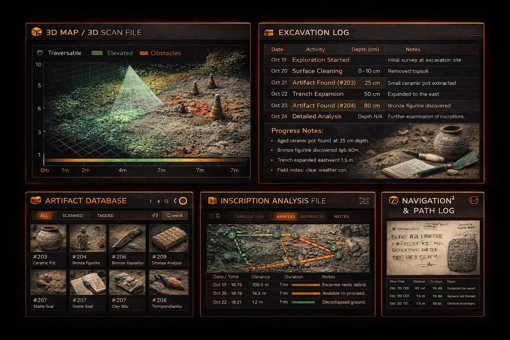
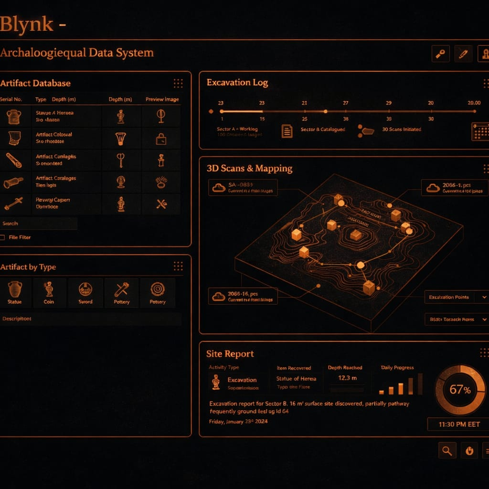

Explore the advanced features that make our robot the ultimate tool for autonomous archaeological exploration.
Advantages: Excellent on rough terrains, stable movement, equipped with basic camera and sensors. Limitations: Fully operator-dependent with no autonomy, cannot monitor excavation or underground layers, limited 3D mapping, no analysis of inscriptions or civilizations, moderate human risk reduction, and standard GPS with limited accuracy.
Advantages: Excellent mobility, flexible for research experiments, supports multiple sensors, and GPS/RTK improves positioning accuracy. Limitations: Partial autonomy requiring human intervention in some tasks, cannot monitor excavation or layers, 3D mapping is experimental only, no inscription or civilization analysis, and human risk reduction depends on the operator.
Advantages: Good for accessing narrow areas, mounted camera for basic documentation, reduces human risk in tight spaces. Limitations: Very limited mobility on rough terrain, operator-dependent with no autonomy, cannot monitor excavation or layers, limited 3D mapping, no inscription/civilization analysis, and limited GPS accuracy.
Advantages: Good mobility, can operate for long periods due to tethered power, equipped with camera and LiDAR depending on system, improved GPS/RTK positioning, excellent risk reduction in deep areas. Limitations: Limited autonomy due to tether or system dependency, cannot monitor excavation or layers, 3D mapping limited to available sensors, and no inscription/civilization analysis.
Advantages: Performs well on flat terrain, lightweight and easy to transport, fast on smooth surfaces. Limitations: Very limited on rough terrain, operator-dependent with no autonomy, cannot monitor excavation or layers, very limited 3D mapping, no inscription/civilization analysis, limited human risk reduction, standard GPS only.
Advantages: Tailored to the site design, equipped with cameras and multiple sensors as needed, flexible and adapted to specific site conditions. Limitations: Limited autonomy, rarely fully autonomous, excavation/layer monitoring partial depending on design, 3D mapping may be incomplete, inscription/civilization analysis limited or absent, human risk reduction depends on design, positioning accuracy varies.


A robotic UGV-like system for archaeological site inspection and documentation
Inspects and monitors archaeological sites to detect risks and protect sensitive areas
Collects field data accurately using advanced sensors and equipment for precise analysis
Generates 3D maps and models of the site and artifacts
Provides reliable information for decision-making and planning restoration or preservation work
Enables remote monitoring and recording of the site using UGV technology
The robot can correct its position after falling and handle hazardous terrains.
An intelligent and autonomous system that reduces the need for complex human intervention.
Monitors the archaeological site and protects sensitive areas during excavation.
Add a little Problem: Working at archaeological sites Solution: Evaluating risks and protecting the team
Problem: Difficulty in accurately documenting the site using slow traditional methods Solution: Rapid and accurate documentation
Problem: Difficulty accessing narrow or dangerous areas Solution: Accessing difficult or dangerous areas
Problem: Difficulty collecting and analyzing data in an organized way for future projects Solution: Supporting informed decision-makingbit of body text